Acquisition Workflow Screenshots#
These screenshots are captured automatically by the nightly CI pipeline
(scripts/take_screenshots.sh) and updated in the repository on every run.
They document the complete acquisition workflow from raw simulator startup to
data visualisation in NeXpy.
The pipeline runs on macOS arm64 (the same architecture as the
darwin-aarch64 IOC binary). When the IOC binary is unavailable (e.g. on a
fresh checkout before the IOC is compiled), the workflow falls back to
demo mode — synthetic GeRM data are generated by
scripts/nexpy_capture.py and the data-visualisation screenshots are
still produced.
1 · Starting the simulator#
The simulator binds a ZMQ REP socket on tcp://*:5556 and listens for
commands. Once the IOC triggers an acquisition it starts sending UDP frames
on port 9870.
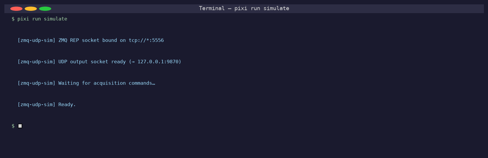
pixi run simulate — simulator process running in the foreground.#
2 · Starting the EPICS IOC#
The ADGerm IOC loads ~1 063 PVs (detector camera, NDStats, NDCodec,
NDStdArrays, NDFileHDF5, NDFileTIFF, NDPva). The iocRun: All
initialization complete message confirms readiness.
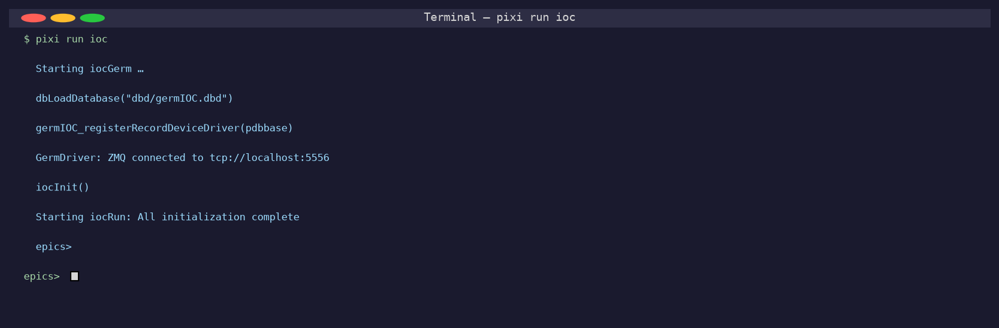
pixi run ioc — IOC fully initialised, all plugins enabled.#
3 · Phoebus control screen#
Phoebus opens the ADGerm.bob screen with macros P=GERM: and
R=cam1:. All PV values are fetched over Channel Access once the IOC is
running.
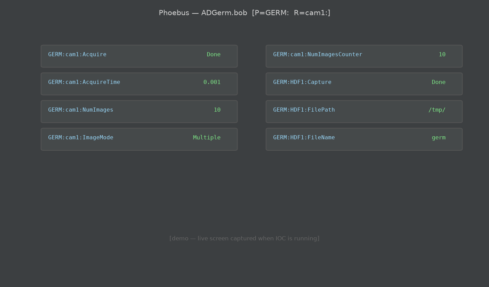
pixi run phoebus — ADGerm main operator screen.#
4 · Warmup acquisition#
A single-frame warmup acquisition (ImageMode=Single, NumImages=1)
is required before enabling HDF5 capture. It primes the NDArray internal
dimensions so the HDF5 plugin can open the file correctly.
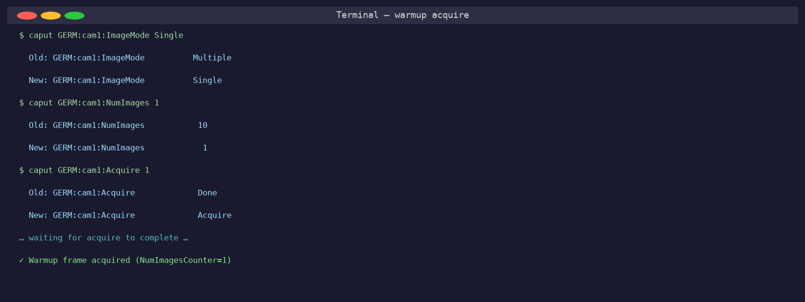
Warmup: caput GERM:cam1:Acquire 1 with NumImages=1, ImageMode=Single.#
5 · Acquire#
The main acquisition begins (ImageMode=Multiple, NumImages=50).
The Detector State PV transitions to Acquiring and the Phoebus LED
turns green.
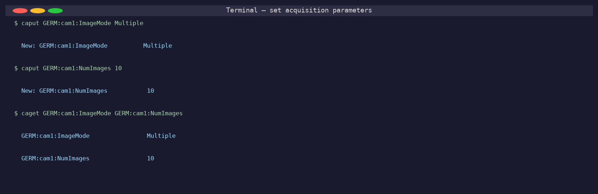
Acquisition started — GERM:cam1:DetectorState_RBV = Acquiring.#
6 · HDF5 Capture#
With capture enabled (GERM:HDF1:Capture=1) the NDFileHDF5 plugin opens
the output file (e.g. /tmp/germ0001.h5) and streams every incoming
NDArray frame into it.
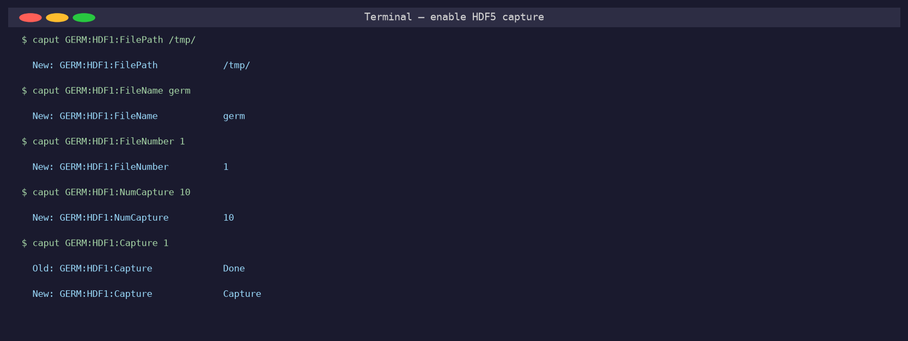
caput GERM:HDF1:Capture 1 — HDF5 file open, capture active.#
7 · Acquire again (stream to HDF5)#
A second acquisition (NumImages=100, ImageMode=Multiple) streams
frames directly into the open HDF5 file. The Num Captured counter
increments with every frame written.
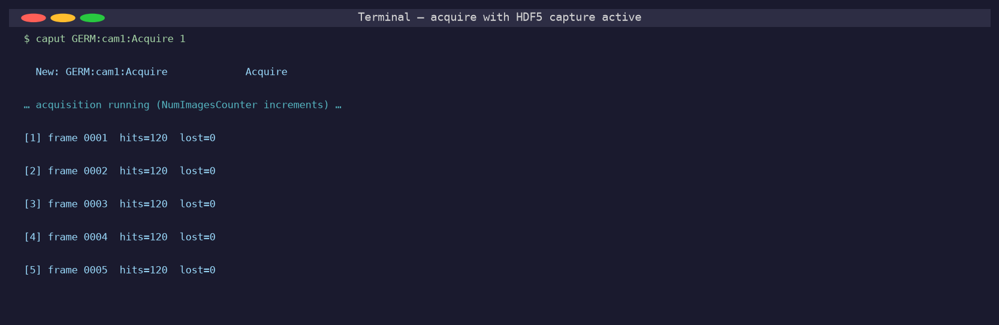
Data streaming into /tmp/germ0001.h5 — GERM:HDF1:NumCaptured_RBV
increments.#
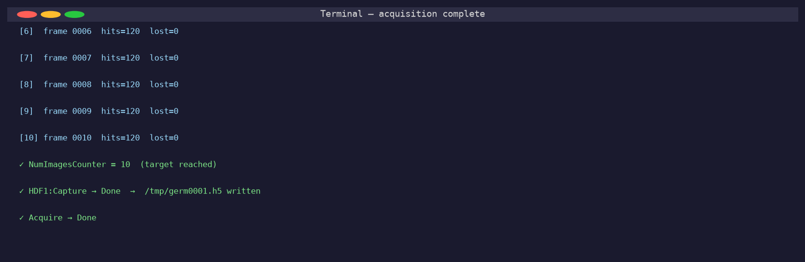
Capture stopped — HDF5 file closed and written to disk.#
8 · Opening NeXpy#
The Open NeXpy button in the Phoebus NDFileHDF5.bob screen runs
ADGerm/germApp/op/bob/open_nexpy.sh. The script:
Stops HDF5 capture (ensures the file is fully flushed and closed).
Reads the filename from
GERM:HDF1:FullFileName_RBV.Launches
pixi run nexpy <filename>.
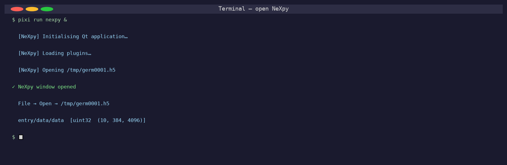
NeXpy file browser opened with /tmp/germ0001.h5 loaded.#
9 · Expanding the HDF5 tree#
The left panel shows the NeXpy file tree. The screenshot below is
generated by scripts/nexpy_capture.py and mirrors the dark-themed
tree view, with the entry/data/data dataset highlighted (selected).
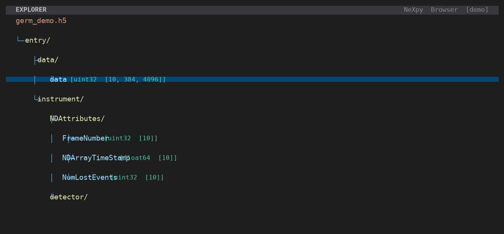
HDF5 file tree — entry/data/data [uint32 [10, 384, 4096]] selected.#
The file structure produced by NDFileHDF5 in Stream mode:
/entry
/data
/data uint32 (10, 384, 4096) ← 10 frames × 384 pixels × 4096 time bins
/instrument
/NDAttributes
/FrameNumber uint32 (10,)
/NDArrayTimeStamp float64 (10,)
/NumLostEvents uint32 (10,)
/detector/
10 · Viewing and plotting data#
Double-clicking a dataset (or pressing Enter) in NeXpy renders the
detector image. The screenshot below shows entry/data/data[0] — one
frame from the acquisition — as rendered by NeXpy’s built-in plot panel.
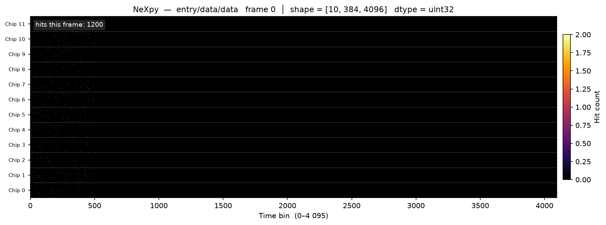
entry/data/data frame 0 — shape (384, 4096).
X-axis: time bin (0–4 095). Y-axis: pixel (chip × 32 + channel).
Chip boundaries are shown as faint white lines.#
11 · Hit map (all frames summed)#
Summing over all 10 frames gives the integrated hit map. The right panel shows the 1-D projection (hits per pixel across all time bins).
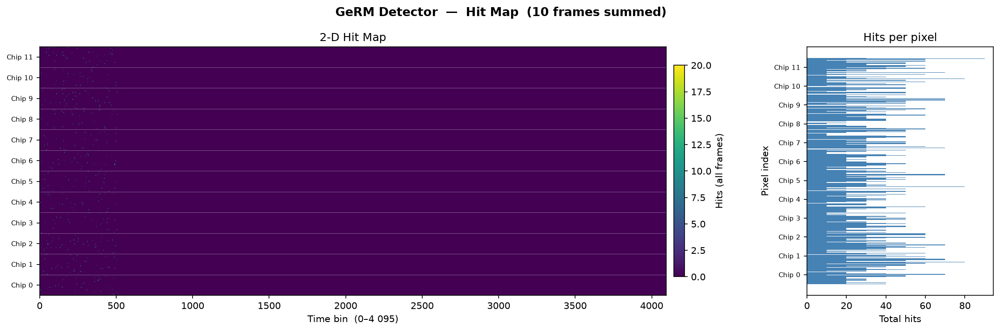
Integrated hit map — 10 frames, 1 200 total hits. Chip boundaries marked in white.#
12 · Acquisition statistics#
A four-panel summary of the acquisition:
Events per frame — should be constant at the configured
EventsPerFramevalue (default 120).Frame numbers — must be monotonically increasing (no dropped frames).
Hits per chip — uniformly distributed across all 12 chips.
Lost events — should be zero for the simulator.
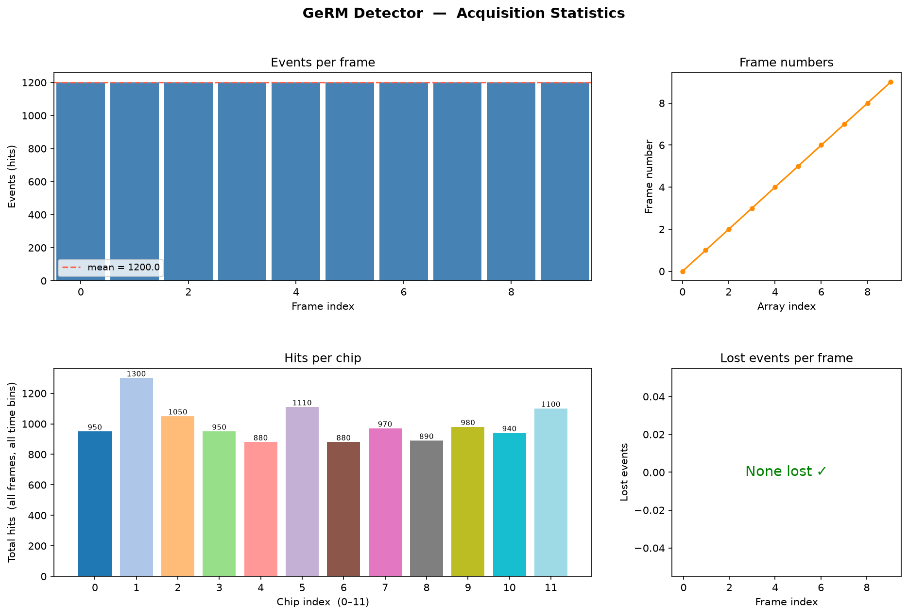
Acquisition statistics: 10 frames, 120 events/frame, 0 lost events.#
Reproducing the screenshots locally#
# Full workflow (requires pre-built IOC + Phoebus on macOS arm64)
bash scripts/take_screenshots.sh
# Data-visualisation screenshots only (any platform, any HDF5 file)
pixi run python scripts/nexpy_capture.py --hdf5-file /tmp/germ0001.h5
# Demo mode — synthetic data, no HDF5 file required
pixi run python scripts/nexpy_capture.py --demo-mode
# Rebuild this documentation
pixi run docs
open docs/_build/html/index.html